Bocetos de la Web
Este documento describe la apariencia de la web mediante bocetos en papel para las distintas páginas intermedias que
verán los usuarios. Estos bocetos han sido escaneados tras ser dibujados a mano y representan la navegación
entre las diferentes secciones del sitio web, aunque pueden variar según vaya evolucionando el proyecto.
Página Principal (Homepage)
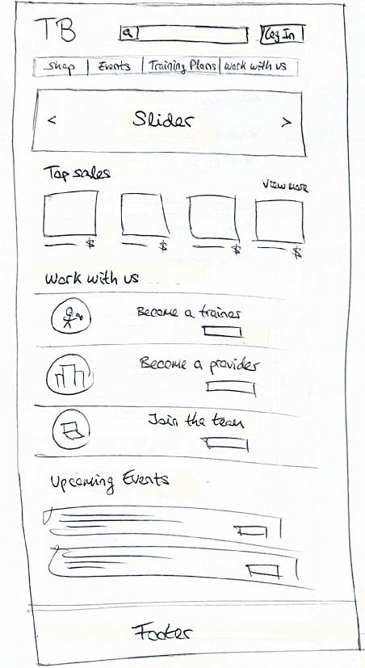
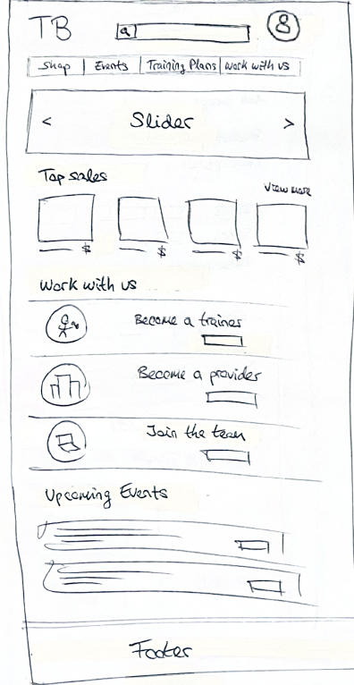
La página principal contiene un menú de navegación con botones principales que permiten acceder a distintas secciones. Una vez que el usuario inicia sesión, aparece un icono de perfil en la parte superior, desde donde puede acceder a su cuenta.
Además, contiene un slider deslizante donde aparecerán las últimas novedades de The Balance, una sección con los productos más vendidos, entre otras cosas.
Funcionalidad de login

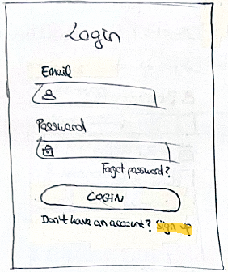
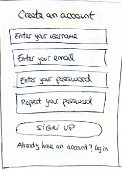
Desde la página principal, al pulsar el botón "Login", el usuario es redirigido a la página de inicio de sesión. Si el usuario no tiene una cuenta, puede pulsar el botón "Sign Up" para acceder a la página de registro y crear una nueva cuenta como cliente.
Funcionalidad my account
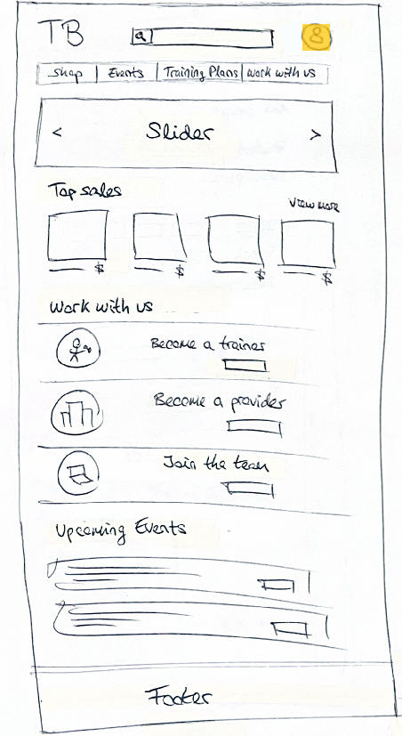
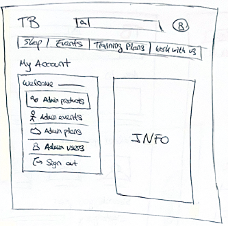
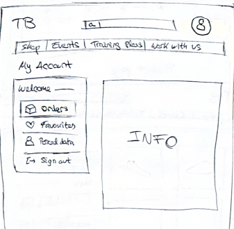
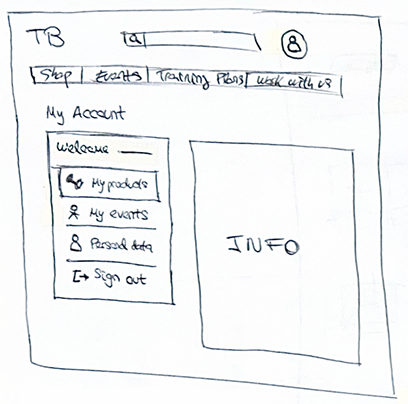
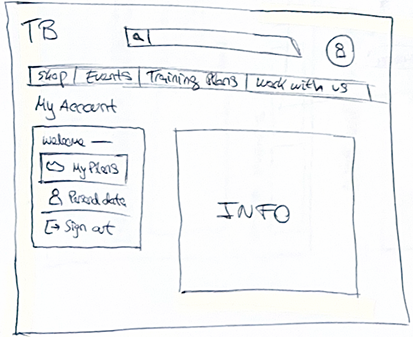
Una vez que el usuario ha iniciado sesión, aparece un icono de perfil en la página principal. Al pulsar sobre él, se accede a la página "My Account", cuya interfaz varía en función del rol del usuario (administrador, cliente, proveedor o entrenador).
La primera imágen del my account sería la del administrador, que le permite gestionar los productos, eventos, planes de entrenamiento o usuarios que hay disponibles en The Balance en ese momento.
La segunda imágen pertenece del my account pertenece a la del cliente, que puede ver sus pedidos realizados o en curso, su lista de productos favoritos o editar sus datos personales.
La tercera imágen del my account corresponde a la del proveedor, que puede gestionar los productos que está ofertando a The Balance en ese momento o realizar nuevas ofertas y lo mismo con los eventos.
La última imágen del my account sería la del nutricionista, que solo tiene como funcionalidad administrar los planes de entrenamiento que tiene asignados en ese momento o poder ofertar nuevos planes a los clientes.
Funcionalidad comprar producto
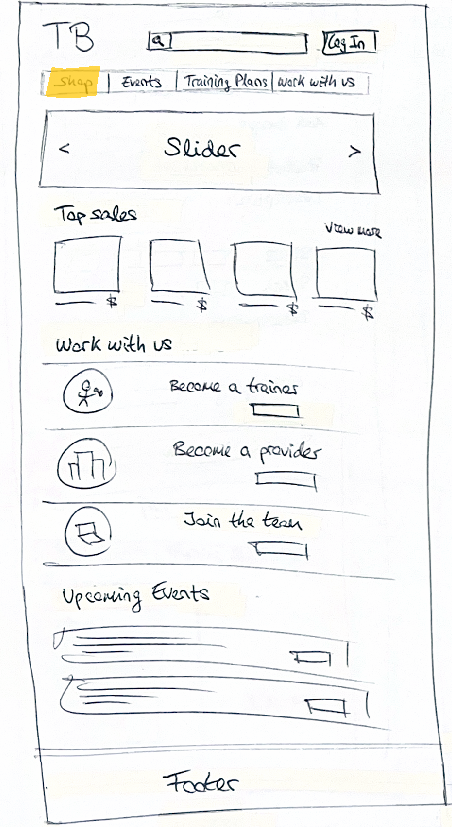
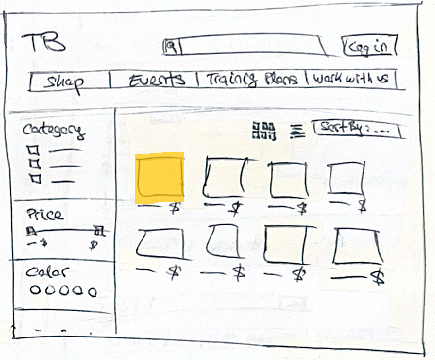
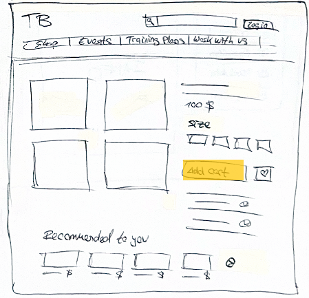
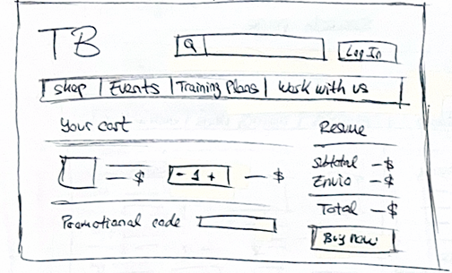
Desde la página principal, al pulsar el botón "Shop", el usuario es dirigido a la página de búsqueda de productos. Allí puede seleccionar un producto específico, lo que lo llevará a una página con información detallada sobre el mismo.
Si el usuario pulsa "Add cart", añadirá su producto al carrito, dándole la opción de ir hasta el carrito para finalizar la compra como se ve en la última imagen.
Funcionalidad apuntarse a un evento
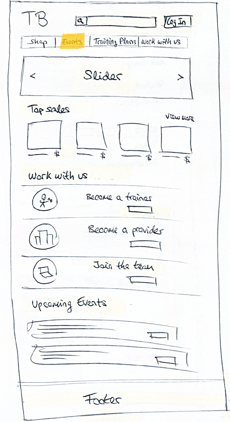
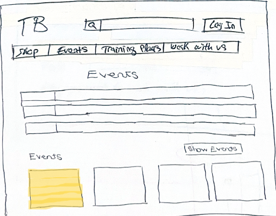
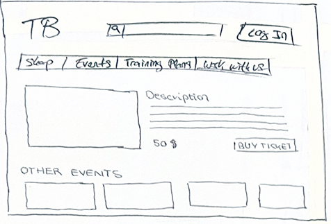
Desde la página principal, al pulsar el botón "Events", el usuario accede a una lista de eventos disponibles. Al seleccionar un evento, se le muestra una página con más detalles y la opción de inscribirse en él.
Si pulsa en buy tickets, de nuevo se le mostrará la opción de poder ir al carrito y alí finalizar su compra.
Funcionalidad comprar plan de entrenamiento
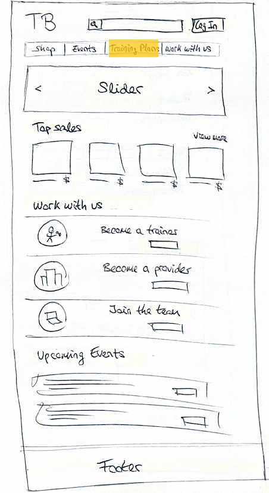
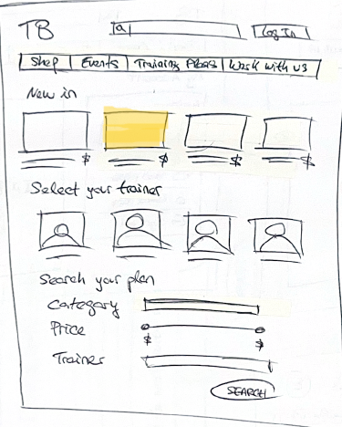
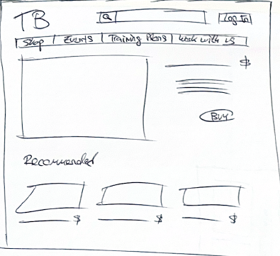
Desde la página principal, al pulsar el botón "Training Plans", el usuario accede a una página con una lista de planes de entrenamiento disponibles. Al seleccionar uno, se abre una página con más detalles y la opción de adquirirlo.
Si pulsa en buy, de nuevo se le mostrará la opción de poder ir al carrito y alí finalizar su compra.
Funcionalidad trabaja con nosotros
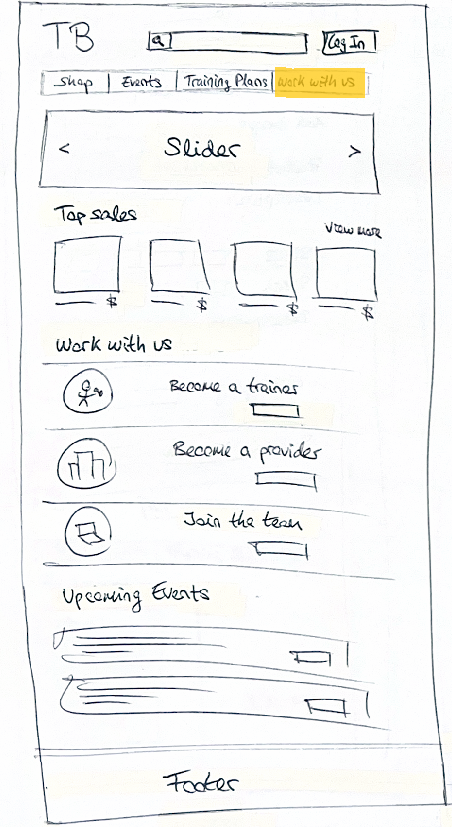
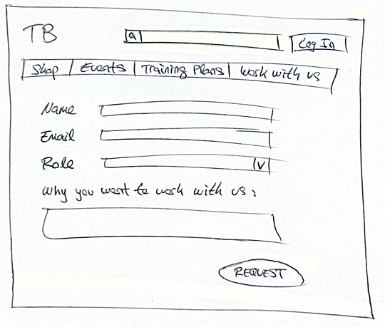
Desde la página principal, al pulsar el botón "Work With Us", el usuario es redirigido a una página donde podrá rellenar un formulario para aplicar a trabajar con The Balance en función del rol que solicite (proveedor, nutricionista o empleado).